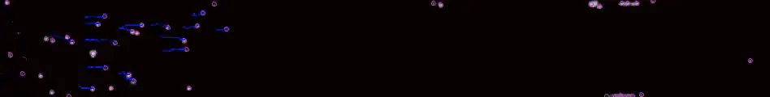
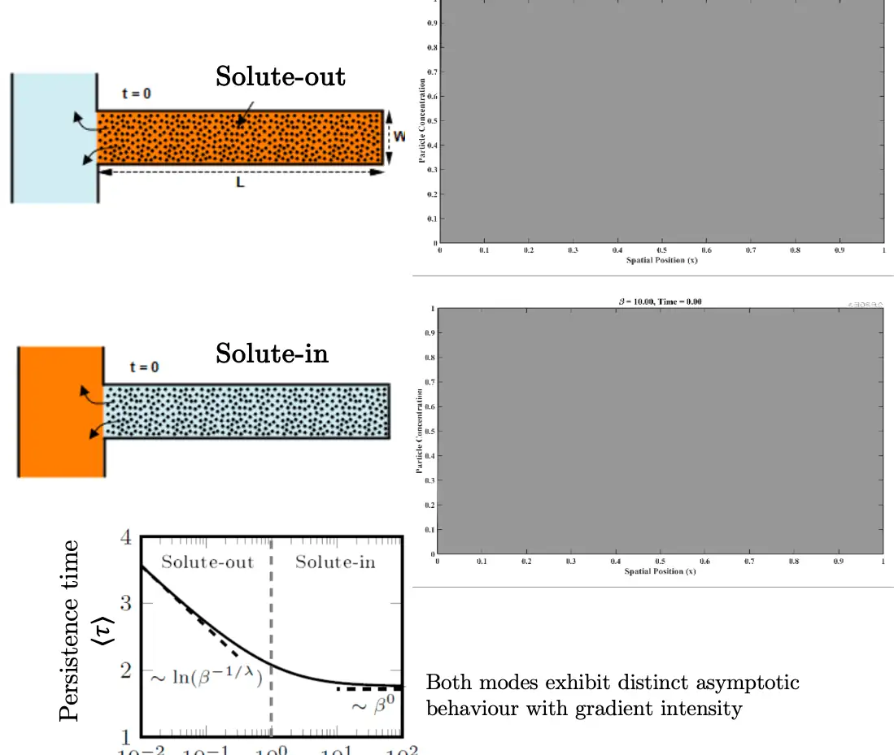

Diffusiophoresis in Porous Materials

We study how electrolytic concentration gradients drive fluid and colloidal transport in confined porous geometries, where conventional advection is weak or absent. Our recent work demonstrates that the orientation of salt gradients can fundamentally alter transport in dead-end pores, enabling asymmetric injection and withdrawal of particles with markedly different time scales and spatial structures. Combining theory, microfluidic experiments, and simulations, we investigate diffusiophoretic and diffusio-osmotic transport across pore scales, from single dead-end channels to disordered and macroscale porous media.
- Kushagra Tiwari*, Jitendra Dhakar*, Kapil Upadhyaya, Akash Choudhary, On the influence of electrolytic gradient orientation on phoretic transport in dead-end pores, Langmuir, 2025
- Jitendra Dhakar, Kapil Upadhyaya, Akash Choudhary, Colloid recovery from porous structures under ambient flow: enhanced extraction via phoretic and osmotic mechanisms, Under Review: arxiv.org/abs/2607.11474
